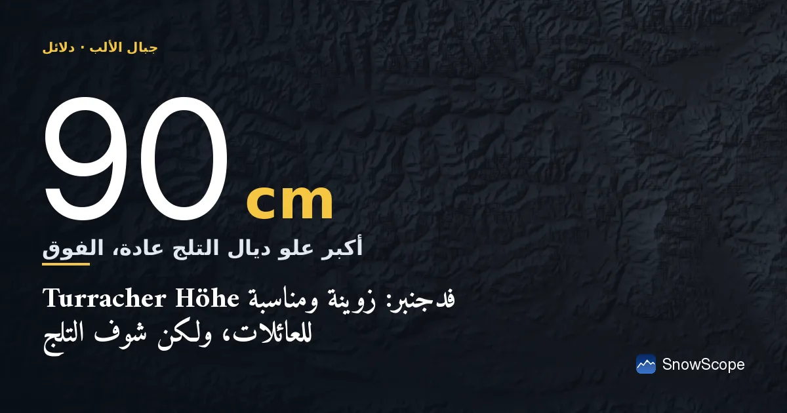

Turracher Höhe فدجنبر: زوينة ومناسبة للعائلات، ولكن شوف التلج
فـ 15 دجنبر عادي، Turracher Höhe تبين 23 سم من التلج فـ منتصف الجبل (1792 م) على 46 شتوة من السجل. غير 39 بالمية من تلك الشتوات كانت عندهم 30 سم ولا أكثر فـ الأسبوع ديال 15-21 دجنبر، واللي معناه البداية ديال دجنبر مقامرة.
شوف توقعات التلج مباشرة ديال Turracher Höhe فالتطبيق ديال SnowScopeالعلو ديال التلج، التنبيهات والخريطة 3D، فابور.
التحدي فـ القاعدة
القرية موجودة فـ ممر عالي فـ 1392 م، وهاد الارتفاع هو النقطة الضعيفة فـ دجنبر. عبر الشتوات اللي فاتو، 15 دجنبر عادي يجيب غير 10 سم فـ القاعدة. فـ الأسبوع ديال 15-21 دجنبر، غير 4 بالمية من الشتوات وصلو ليهم 30 سم هناك. التلج يجي متأخر: اليوم الأول عادي لي فيه 30 سم فـ منتصف الجبل هو 22 دجنبر.
العقود اللي فاتو تبين تلج أقل فـ البداية ديال دجنبر. النسبة ديال الأسابيع ديال ميلاد مع 30 سم فـ منتصف الجبل نقصت من 67 بالمية فـ الـ 15 شتوة الأولى (1980-81 ل 1994-95) ليهم 27 بالمية فـ الـ 15 الأخيرة (2011-12 ل 2025-26). الشتوة اللي فاتو عندها غير 3 سم فـ 15 دجنبر فـ منتصف الجبل، واللي معناه أن الدجانبر الرقيقة تقدر تقع.


فين تتزلج إذا رحت بدري
الجهة الفوقانية تعطيك احتمالات أحسن. فـ القمة (2193 م)، 15 دجنبر عادي فيه 34 سم، و70 بالمية من الشتوات وصلو ليهم 30 سم فـ أسبوع ميلاد. الارتفاع هو 801 م عبر 34 كم من البيستات و15 ليفتة، واللي معناه بلي فيك تطقع للفوق وتجنب الأرض الفارغة.
منطقة التزلج تناسب العائلات مع 15 ليفتة موزعة عبر التضاريس الهينة. إذا رحت قبل 22 دجنبر، برمج وقت أكثر فـ الارتفاعات العالية واقبل بلي البيستات السفلى قد تكون رقيقة ولا مقفولة.
العلو ديال التلج حسب التاريخ
فـ منتصف الجبل، الحركة هي: 12 سم فـ 1 دجنبر، 23 سم فـ 15 دجنبر، 26 سم فـ 24 دجنبر، 28 سم فـ 31 دجنبر. هاد هي الأعماق العادية من الشتوات اللي فاتو. فـ سنة عميقة (1 من 10)، منتصف الجبل يوصل ليهم 48 سم فـ 15 دجنبر. فـ سنة رقيقة، غير 4 سم.
التنوع ديالك يوضح ليك ليش دجنبر هنا غير مؤكد. قد تحصل على قاعدة صحيحة ليهم ميلاد، ولا قد تحصل على حجارة قرب السطح. الصورة ديال كل الشتوة متواضعة: قمة عادية فـ منتصف الجبل هي 67 سم، والفبراير عادة هو الشهر الأعمق، ولا دجنبر.
الثمن: موسم منخفض ليهم 24 دجنبر
جواز التزلج ديال 2026-27 فيه سعر موسم منخفض من اليوم الأول ليهم 24 دجنبر، بعدها موسم رئيسي. جواز اليوم ديال الكبير يكلف EUR 72.50 فـ الموسمين. جواز الـ 6 أيام هو EUR 353 فـ الموسم المنخفض و EUR 381 فـ الموسم الرئيسي، واللي معناه التوفير كان على أسبوع كامل قبل ميلاد، ولا على أيام واحدة.
احجز أسبوع فـ الموسم المنخفض واتوفر EUR 28 على جواز ـ 6 أيام. احجز مرونة فـ التواريخ ديالك: التلج فـ منتصف الجبل يوصل ليهم 30 سم غير حول 22 دجنبر فـ الوسط.
بديل الجليد فـ نفس السعر
Mölltaler Gletscher موجودة فـ نفس الولاية وتكلف شي قريب. أقل ليفتة ديالها فـ 2103 م مع 66 سم فـ 15 دجنبر عادي، و91 بالمية من الشتوات عندهم 30 سم فـ الأسبوع ديال 15-21 دجنبر. جواز الـ 6 أيام ديال الموسم المنخفض كان EUR 332 فـ آخر لائحة منشورة ديالها (موسم 2025-26).
فـ دجنبر، الجليد يربح فـ عمق التلج وتاريخ الوصول. Turracher Höhe يربح فـ الأجواء العائلية والبيستات بارتفاع أقل. من يناير فصاعدا، التلج فـ منتصف الجبل فـ Turracher Höhe يصير أكثر يقينا.
نصايح للي كيتزلجو
- احجز أسبوع كامل فـ الموسم المنخفض (قبل 24 دجنبر) واتوفر EUR 28 على جواز ـ 6 أيام. جنب الأيام الواحدة غير إذا كان التلج مؤكد.
- إذا زرت قبل 22 دجنبر، تزلج على الليفتة الفوقانية. فـ 2193 م، 70 بالمية من أسابيع ميلاد عندهم 30 سم قرين مع 39 بالمية فـ منتصف الجبل.
- شوف عمق التلج أسبوع قبل ما تسافر. الدجانبر الرقيقة قدرة تقع؛ الشتوة اللي فاتو عندها غير 3 سم فـ منتصف الجبل فـ 15 دجنبر.
- برمج وقت أكثر جوا فـ البداية ديال دجنبر. ضوء النهار فـ دجنبر قصير فـ هاد الخطوط العرضية، والتلج الرقيق قد يفرض غلق البيستات السفلى.
- إذا طلعت من البيست بعد عاصفة: استشير النشرة الرسمية ديال الانهيارات من Lawinenwarndienst Steiermark (lawinen.report).
على هاد الأرقام
العلو ديال التلج فالمحطات هو أكثر تلج فالجهة الفوقانية فالتاريخ المكتوب؛ هادو تقديرات لمنطقة، ماشي قياس فنقطة وحدة. التوقعات يمكن تتبدل. ديما شوف النشرة الرسمية ديال الانهيارات قبل ما تخرج من البيست.
النشرات الرسمية ديال الانهيارات: Lawinenwarndienst Steiermark
كيفاش تستاشهد بهاد المقال
للبحث، التعليم ولا الصحافة: الأرقام والرسومات تقدر تعاود تخدم بيهم بحرية تحت CC BY 4.0 مع هاد الاستشهاد.
SnowScope (2026), Turracher Höhe فدجنبر: زوينة ومناسبة للعائلات، ولكن شوف التلج, https://snowscope.app/blog/ar/2026/11/turracher-hoehe-december-skiing-honest-snow-check.html, تشاف ف 2026-11-14
SnowScope (Atlas Labs). (2026, November 14). Turracher Höhe فدجنبر: زوينة ومناسبة للعائلات، ولكن شوف التلج. SnowScope snow reports. https://snowscope.app/blog/ar/2026/11/turracher-hoehe-december-skiing-honest-snow-check.html
BibTeX
@misc{snowscope2026turracherhoehedecembersk,
author = {{SnowScope (Atlas Labs)}},
title = {Turracher Höhe فدجنبر: زوينة ومناسبة للعائلات، ولكن شوف التلج},
year = {2026},
month = nov,
howpublished = {\url{https://snowscope.app/blog/ar/2026/11/turracher-hoehe-december-skiing-honest-snow-check.html}},
note = {Published 2026-11-14 20:14 UTC; accessed 2026-11-14}
}· CC BY 4.0 · الطريقة، الداتا والأدوات →
Turracher Höhe: التلج والحرارة حسب العلو، هاد الشتا مقارنة مع اللي فاتت (الأدوات) →
تابع Turracher Höhe
فابور: ميساج ملي يجي التلج، والتوقعات كل صباح.